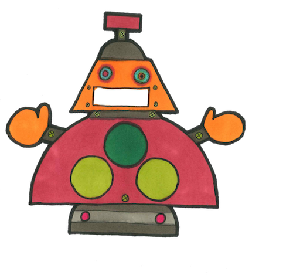
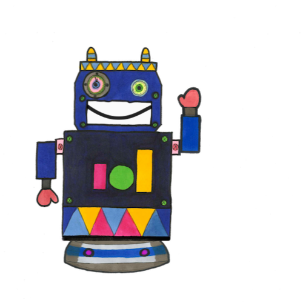
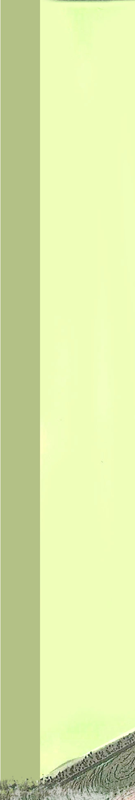
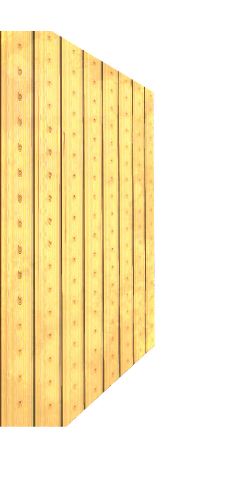

<!DOCTYPE html>
<html lang="en">
  <head>
    <meta charset="utf-8">
    <title>-</title>
    <link rel="stylesheet" href="style.css">
    <link rel="stylesheet" href="node_modules/bootstrap/dist/css/bootstrap.min.css">

    <!-- js dependencies -->
    <script src="node_modules/jquery/dist/jquery.min.js"></script>
    <script src="node_modules/mustache/mustache.min.js"></script>
    <script src="node_modules/file-saver/FileSaver.min.js"></script>

    <!-- js -->
    <script src="js/main.js"></script>
    <script src="js/views.js"></script>

  </head>

  <body>

    <div class="container">

      <main id="main"></main>
      
      <script id="config-templ" type="x-tmpl-mustache">
        <div class="config-templ">

          <h3>Konfiguration</h3>
          <br>

          <div class="form-group">
            <div class="checkbox">
              <label><input type="checkbox" id="load-data">Daten von extern laden</label>
            </div>
          </div>

          <div class="form-group" style="background: #DDD; padding: 10px; width: 300px; margin-left: 20px">
            <p>Datei auswählen</p>
            <input type="file" accept='text/plain' id="data-path" onchange="openFile(event)">
          </div>

          <br>
          <form class="form-inline">
          <div class="form-group">
            Bei Trial <input type="text" id="start-trial" value="0" class="form-control" style="width: 50px;"/> starten.<br>
            <p style="color: grey">0 = Training nicht überspringen, mit erstem Trainings-Trial starten.<br>
            1 = Training überspringen, mit erstem Test-Trial starten<br>
            n = Training überspringen, mit n-tem Test-Trial starten.<br></p>
          </div>
          </form>

          <div class="form-group">
            <div class="checkbox">
              <label><input type="checkbox" id="skip-intro">Intro überspringen</label>
            </div>
          </div>

          <br><br>
          <button type="submit" id="go-btn" class="btn btn-default" style="font-size:14px !important;">Ok</button>
        </div>
      </script>

      <script id="intro-templ" type="x-tmpl-mustache">
        <div class="info-templ">
          <p>Herzlich Willkommen!</p>
          <p>Danke, dass du dir die Zeit für unsere Studie nimmst. Zunächst einmal wollen wir dir erklären, was dich erwartet
          und dir ein paar Sachen vorstellen.</p>
          <button type="submit" id="start-presentation-btn" class="btn btn-primary">Weiter</button>
        </div>
      </script>

      <script id="presentation-templ" type="x-tmpl-mustache">
        <div class="info-templ">

          <div id="introduce-robots" style="display: none;">
            <p>Das sind die beiden Roboter X2 und ROBI5000. X2 verteilt gerne Sachen in der Werkstatt, die ROBI5000 dann suchen muss. ROBI5000 ist schon ein etwas älteres Modell und ein bisschen schusselig. Er findet manchmal Sachen nicht wieder, deshalb soll er verschrottet werden. Deine Aufgabe ist es, ihm zu helfen, die Sachen wiederzufinden, die X verteilt hat. So kann er der Verschrottung vielleicht noch entgehen...</p>
            X2 ...verteilt die Sachen.<br>
            ROBI5000 ...muss sie wiederfinden. Du hilfst ihm dabei.
            <br><br>
            <button type="submit" id="go-to-workshop-btn" class="btn btn-primary">Weiter</button>
          </div>

          <div id="introduce-workshop" style="display: none;">
            <p>Das ist die Roboter-Werkstatt, in der X2 und ROBI5000 gebaut worden sind. Und hier arbeiten sie auch.</p>
            
            <div id="left-wall" style="z-index: 100; position: relative; float: left;">
              
            </div>

            <div id="workshop">
              
            </div>
            
            <br>
            
            <p>Hier gibt es allerlei Gegenstände. Das Werkzeug, mit dem hier gearbeitet wird, ist gewöhnliches Werkzeug. Außerdem gibt es ein paar verrückte Gerätschaften aus der Roboterwelt, die du noch nicht kennst...<br><br>Jetzt lernst du alle Gegenstände einmal kennen. Du siehst gleich nacheinander Gegenstände und ihre Namen. Bitte lies den Namen ein Mal laut vor.</p>
            <button type="submit" id="go-to-items-presentation-btn" class="btn btn-primary">Weiter</button>
          </div>

          <div id="introduce-all-items" style="display: none;"></div>

          <div id="introduction-end" style="display: none;">
            Gleich wird X2 immer zuerst in die Werkstatt kommen und ein Werkzeug auf einem der Gegenstände ablegen, die du gerade kennengelernt hast. Wenn er den Raum verlassen hat, kommt ROBI5000 ins Bild und wird dich fragen, wo er das abgelegte Werkzeug wiederfinden kann. Leider ist ROBI5000 wie gesagt ein bisschen alt und nicht mehr auf dem neuesten Stand der Technik. Diese Generation von Robotern versteht nur einfache Aussagesätze. Er kommt durcheinander, wenn man  komplizierte Sätze sagt. Bitte antworte deshalb immer mit der folgenden Satzstruktur:
            <br><br>
            <b>Er hat den _______ auf die ________ gelegt.</b>
            <br><br>
            Wobei in die Lücken das Werkzeug und der Ablagegegenstand eingesetzt wird. Also, z.B.:
            <br><br>
            <b>Er hat den Schraubenschlüssel auf den Tisch gelegt.</b>
            <br><br>
            Zur Unterstützung wird der Satz unten eingeblendet. Bitte vermeide auch "Ja" oder "Nein". ROBI5000 stürzt bei diesen Wörtern manchmal einfach ab!<br><br>
            Alles andere versteht er sehr gut, wie z.B. deine Sprechmelodie.
            <br><br>
            Bist du bereit für ein kleines Training?
            <br><br>
            <button type="submit" id="continue-btn" class="btn btn-primary">Ja, los!</button>
          </div>
        
        </div>  
      </script>

      <script id="trial-templ" type="x-tmpl-mustache">

        <div class="trial-templ">

          <div id="left-wall" style="z-index: 100; position: relative; float: left;">
            
          </div>
          
          <div id="door">
            
          </div>

          <div id="workshop">
            
          </div>

          <div id="robiX"></div>

          <div id="robiY"></div>

          <div id="sign"></div>  

          <div id="object"></div>

          <div id="robiX-tool"></div>

          <div id="sentence"></div>

          <div id="bubble">
            <div id="bubble-content">
              <div id="bubble-object-div" style="position: absolute; top: 40px"></div>
              <div id="bubble-tool-div" style="position: absolute; top: 20px; left: 15px"></div>
              <div id="bubble-text" style="position: absolute; top: 90px; left: 150px"></div>
            </div>
          </div>

          <div id="ready-to-take-off-screen">
            Das war das Training. Bist du bereit für das Experiment?
            <br><br>
            <button type="submit" id="start-exp-btn" class="btn btn-primary">Ja, los!</button>
          </div>

          <div id="curtain-wall"></div>

          <div id="score">
            Punkte
            <div id="scores-number"></div>
          </div>

        </div>

      </script>

      <script id="end-templ" type="x-tmpl-mustache">
        <div class="info-templ" style="font-size: 30px">
          <p>Juhu! ROBI5000 muss nicht verschrottet werden! Danke für deine Mithilfe!</p>
          
        </div>
      </script>

    </div>

  </body>
</html>